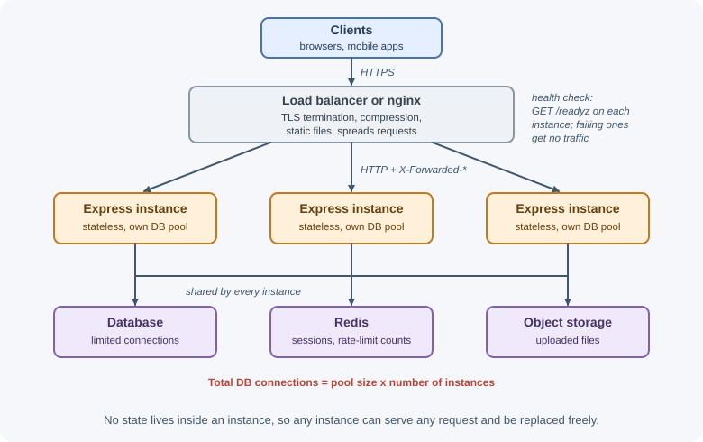
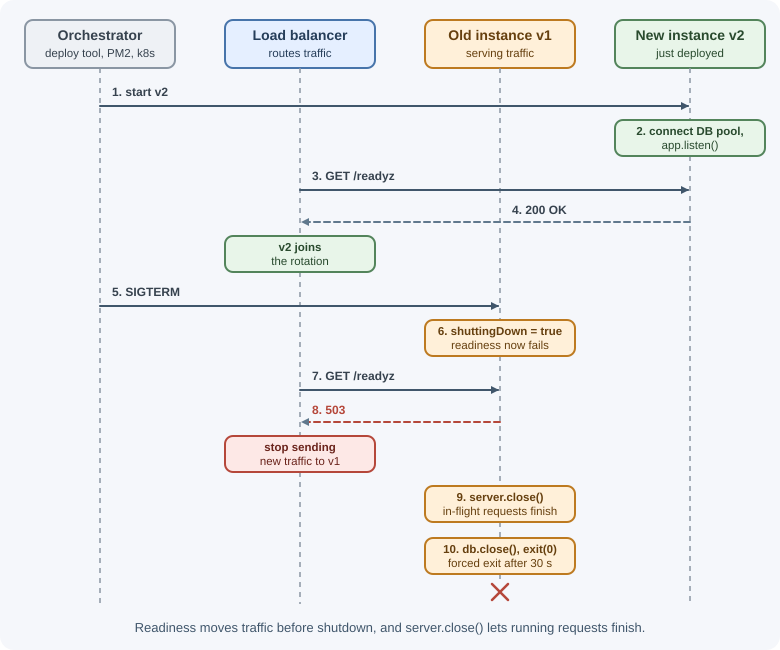

Running Express in Production¶
An Express app that works on a laptop is not yet ready for real users. Production adds process supervision, multiple instances, a reverse proxy, graceful restarts, health checks, logging, and monitoring. This lesson covers how to run Express reliably and quickly once it is deployed.
Why it matters¶
In production, processes crash, servers are replaced, deployments happen during traffic, and load varies by the hour. An app that drops in-flight requests on every deploy, cannot be health-checked by a load balancer, or logs nothing useful will cause outages that are hard to diagnose. Most performance problems in Express apps also come from a few avoidable patterns: synchronous work, missing connection pooling, and uncached responses.
Real-world usage¶
- Kubernetes defines how most containerized apps are stopped. Its
pod lifecycle documentation
explains that deleting a pod sends
SIGTERMto the main process with a grace period that defaults to 30 seconds, after which the container runtime sendsSIGKILLto anything still running; a failed readiness probe removes the pod from its Services' endpoints. This is why the shutdown code below handlesSIGTERM, fails readiness, and exits well within 30 seconds. - AWS Elastic Load Balancing keeps idle connections to your app open. Its
Application Load Balancer documentation
states that the idle timeout is 60 seconds by default and recommends
configuring the application's idle timeout to be larger than the load
balancer's: the reason for
keepAliveTimeout = 65_000. - PM2 is a common way to run Node on virtual machines. Its
cluster mode documentation
describes scaling networked Node.js apps across all available CPUs
without code changes, and a
reloadthat, unlikerestart, achieves a 0-second-downtime reload.
Popular tools and providers: PM2, systemd, Docker, Kubernetes, Amazon ECS;
Nginx and cloud load balancers; pino and pino-http for logs;
OpenTelemetry and APM services for tracing and metrics.
How it works¶
A typical production layout¶

Every instance must be stateless: sessions, rate-limit counters, and uploaded files live in shared services, so any instance can serve any request and instances can be added or removed freely.
NODE_ENV=production¶
Setting NODE_ENV=production changes behavior in Express and many
libraries:
- Express caches compiled view templates.
- The default error handler stops sending stack traces to clients.
- Many libraries skip development-only checks and verbose logging.
It is a convention, not a magic switch: you still need to configure
logging, security, and performance yourself. Never rely on
NODE_ENV=development features being off unless you set the variable.
Process managers vs containers¶
A single Node process stops if it crashes. Something must restart it.
| Option | How it works | Good for |
|---|---|---|
| PM2 | Node-focused process manager: restarts on crash, cluster mode, log files, zero-downtime reload |
Virtual machines running Node directly |
| systemd | The Linux service manager restarts the process and starts it at boot | Linux servers; minimal extra tooling |
| Containers (Docker, Kubernetes, ECS) | The orchestrator restarts containers and runs replicas | Most modern deployments |
With containers, run one Node process per container and scale by running more containers; the orchestrator already handles restarts, so PM2 is usually unnecessary inside them. See Docker.
Using every CPU core¶
JavaScript in one Node process runs on one thread, so one process uses about
one CPU core. To use more cores, run several processes: PM2 cluster mode,
Node's cluster module, or multiple container replicas behind a load
balancer. See
worker threads, child processes, and cluster
and scalability.
Behind a reverse proxy¶
A reverse proxy such as nginx
or a cloud load balancer usually terminates TLS, serves static files,
compresses responses, buffers slow clients, and spreads load. Express then
sees every request as coming from the proxy over HTTP. Set trust proxy to
the number of proxies so req.ip, req.protocol, and req.secure reflect
the real client. See
reverse proxy.
Compression¶
Gzip or Brotli compression shrinks JSON and HTML responses dramatically. It
costs CPU, so compress at the proxy (nginx, CDN) when possible. If Express
must do it, use the compression middleware.
Caching headers and ETags¶
- Express adds a weak
ETagto responses sent withres.send()/res.json(). When a client repeats a request withIf-None-Match, Express can answer304 Not Modifiedwith no body. The response is still computed, so ETags save bandwidth, not server work. Cache-Controldecides whether browsers, CDNs, and proxies may reuse a response. Public, rarely changing data can be cached by a CDN; per-user data needsprivateorno-store.
See caching for application-level caching with Redis.
Keep-alive and server timeouts¶
HTTP keep-alive reuses one TCP connection for many requests. Node's HTTP server has several timeouts:
| Setting | Meaning |
|---|---|
server.keepAliveTimeout |
How long an idle keep-alive connection stays open (default 5 seconds) |
server.headersTimeout |
Maximum time to receive the request headers (default: the smaller of 60 seconds and requestTimeout) |
server.requestTimeout |
Maximum time to receive the whole request (default 5 minutes since Node 18) |
If a load balancer keeps idle connections open longer than Node does, Node
may close a connection just as the balancer sends a request on it, causing
intermittent 502 errors. Set keepAliveTimeout longer than the load
balancer's idle timeout: AWS, for example, sets an Application Load
Balancer's idle timeout to 60 seconds by default and recommends configuring
the application's idle timeout to be larger, so 65 seconds is a common
choice.
Graceful shutdown¶
Deployments and scaling send SIGTERM to the process. A graceful shutdown:
- Marks the instance as not ready, then keeps serving for a few seconds so the load balancer's health checks notice and stop sending new traffic.
- Calls
server.close(), which stops accepting connections and waits for in-flight requests to finish. Idle keep-alive connections must also be closed, or they keep the server open untilkeepAliveTimeoutexpires. - Closes database pools, Redis clients, and queue connections.
- Exits, with a forced-exit timer in case something hangs.
Health checks¶
| Endpoint | Question it answers | Typical check | If it fails |
|---|---|---|---|
Liveness (/livez) |
Is the process alive and not stuck? | Return 200 if the event loop responds | Orchestrator restarts the instance |
Readiness (/readyz) |
Can it serve traffic right now? | Database and critical dependencies reachable; not shutting down | Load balancer stops routing to it |
Keep liveness checks simple: if liveness depends on the database, a database outage restarts every instance in a loop.
Logging and request IDs¶
Production logs should be structured (JSON), go to standard output, and
be collected by the platform. pino is a fast JSON logger; pino-http
logs each request with method, URL, status, and response time. Give every
request an ID (reuse an incoming X-Request-Id from the proxy or generate
one) and include it in every log line and in error responses, so one request
can be traced across logs. See
monitoring and logging.
Monitoring and APM¶
Track the request rate, error rate, and latency percentiles (p50, p95, p99) for each route, plus process metrics: memory, CPU, and event-loop delay. Application performance monitoring (APM) tools and OpenTelemetry tracing show where time is spent inside a request, including database and external calls.
Avoid blocking the event loop¶
Any synchronous work in a handler pauses every request on that process:
fs.readFileSync, crypto.pbkdf2Sync, JSON.parse of huge payloads,
complex regular expressions, or large loops. Use asynchronous APIs, stream
big data, and move CPU-heavy work to worker threads or a background job.
Database connection pooling¶
Opening a database connection is slow. Create one client or pool when the app starts and reuse it for every request; never connect inside a handler. Size the pool for your workload, and remember that the total connections equal the pool size times the number of instances, which must stay within the database's limit.
Configuration via environment¶
Read configuration (ports, URLs, secrets, feature flags) from environment variables validated at startup, so the same build runs in every environment. See process, environment variables, and configuration.
Zero-downtime deployments¶
- Rolling deployment: replace instances a few at a time; readiness checks keep traffic away from instances that are starting or stopping.
- PM2
reload: restarts cluster workers one by one. - Blue-green: start a full new version beside the old one and switch traffic at once.
All of these depend on graceful shutdown and readiness checks working.

When to use and when not to use¶
Choose how to run Express in production by environment:
- Containers with an orchestrator (Kubernetes, ECS, Cloud Run): one Node process per container, the platform handles restarts and scaling. Do not add PM2 inside the container.
- Virtual machines without containers: PM2 or systemd supervises the process; PM2 cluster mode uses every core.
- Very spiky or low traffic: a serverless platform may be cheaper, but long-lived connections, in-process state, and startup time behave differently from a normal server.
Do work in Express only when it belongs there: compress, serve static files, and terminate TLS at the proxy or CDN when you have one; keep Express for application logic.
| Option | Restarts on crash | Uses all cores | Zero-downtime deploys | Best for |
|---|---|---|---|---|
node server.js in a shell |
No | No | No | Never in production |
| systemd | Yes | One process per unit | Needs extra setup | Simple Linux servers |
| PM2 | Yes | Cluster mode | pm2 reload |
VMs running Node directly |
| Containers + orchestrator | Yes | Run more replicas | Rolling deployments | Most modern deployments |
| Serverless | Managed | Managed | Managed | Spiky traffic, small APIs |
Practical examples¶
A production-ready server entry point¶
// src/server.js
import { createApp } from "./app.js";
import { db } from "./db.js"; // a pool created once at startup
import { logger } from "./logger.js";
const app = createApp();
let shuttingDown = false;
app.get("/livez", (req, res) => res.sendStatus(200));
app.get("/readyz", async (req, res) => {
if (shuttingDown) return res.sendStatus(503);
try {
await db.ping();
res.sendStatus(200);
} catch {
res.sendStatus(503);
}
});
const port = Number(process.env.PORT ?? 3000);
const server = app.listen(port, () => logger.info({ port }, "listening"));
server.keepAliveTimeout = 65_000; // longer than a 60s load-balancer idle timeout
// How long to keep serving after readiness fails, so the load balancer's
// health checks notice and stop routing here. Tune to your check interval.
const DRAIN_DELAY_MS = Number(process.env.DRAIN_DELAY_MS ?? 5_000);
async function shutdown(signal) {
if (shuttingDown) return; // ignore a second signal
logger.info({ signal }, "shutting down");
shuttingDown = true; // 1. readiness now fails
const forceExit = setTimeout(() => process.exit(1), 30_000);
forceExit.unref(); // don't keep the process alive just for this
// 2. Keep serving briefly while the load balancer takes us out of rotation
await new Promise((resolve) => setTimeout(resolve, DRAIN_DELAY_MS));
server.close(async () => { // 3. stop accepting; wait for in-flight
await db.close(); // 4. release resources
process.exit(0);
});
// close() drops connections that are idle right now, but a keep-alive
// socket that finishes its last request afterwards would stay open until
// keepAliveTimeout (65 s). Close such sockets as soon as they go idle.
setInterval(() => server.closeIdleConnections(), 1_000).unref();
}
process.on("SIGTERM", () => shutdown("SIGTERM"));
process.on("SIGINT", () => shutdown("SIGINT"));
(In a real app, register the health routes inside createApp() before the
404 handler; they are shown here to keep the example in one file.)
Structured logging with request IDs¶
import express from "express";
import pino from "pino";
import pinoHttp from "pino-http";
import { randomUUID } from "node:crypto";
export const logger = pino({
level: process.env.LOG_LEVEL ?? "info",
redact: ["req.headers.authorization", "req.headers.cookie"],
});
const app = express();
app.use(pinoHttp({
logger,
genReqId: (req, res) => {
// Reuse the proxy's ID if present (only trust it if your proxy sets it)
const id = req.headers["x-request-id"] ?? randomUUID();
res.setHeader("X-Request-Id", id); // client can quote it in bug reports
return id;
},
}));
app.get("/tasks", (req, res) => {
req.log.info("listing tasks"); // includes the request ID
res.json([]);
});
A log line looks like this (trimmed: the real line also includes pid,
hostname, and the request and response headers, with authorization and
cookie shown as [Redacted]):
{"level":30,"time":1730900000000,"req":{"id":"6f1c...","method":"GET",
"url":"/tasks"},"res":{"statusCode":200},"responseTime":4,
"msg":"request completed"}
Compression and cache headers¶
import compression from "compression";
app.use(compression()); // only if the proxy does not compress
app.get("/api/countries", (req, res) => {
res.set("Cache-Control", "public, max-age=86400"); // safe for CDNs: same for all users
res.json(countries);
});
app.get("/api/me", requireAuth, (req, res) => {
res.set("Cache-Control", "private, no-store"); // never cache per-user data
res.json(req.user);
});
PM2 cluster mode¶
pm2 start src/server.js -i max --name api # one process per CPU core
pm2 reload api # zero-downtime restart
pm2 logs api
A systemd service¶
[Unit]
Description=Tasks API
After=network.target
[Service]
WorkingDirectory=/srv/tasks-api
ExecStart=/usr/bin/node src/server.js
Environment=NODE_ENV=production
EnvironmentFile=/etc/tasks-api.env
Restart=always
User=tasksapi
[Install]
WantedBy=multi-user.target
Best practices¶
Production checklist¶
| Area | Check |
|---|---|
| Environment | NODE_ENV=production; config validated at startup |
| Processes | Supervised (PM2, systemd, or orchestrator); restart on crash |
| Scaling | Stateless instances; shared session and rate-limit stores |
| Proxy | TLS at the proxy; trust proxy set correctly; compression at proxy or app |
| Timeouts | keepAliveTimeout above the load balancer's idle timeout |
| Shutdown | SIGTERM handled; readiness flips; drain delay; server.close() plus idle keep-alive sockets closed; resources closed; forced-exit timer |
| Health | Separate liveness and readiness endpoints |
| Logging | JSON logs to stdout; request IDs; secrets redacted |
| Monitoring | Error rate, latency percentiles, memory, event-loop delay; alerts |
| Performance | No sync calls in handlers; pooled DB connections; caching headers |
| Deploys | Rolling or blue-green; tested rollback |
General habits¶
- Measure before optimizing: find slow routes from real latency data.
- Keep handlers asynchronous and small; offload heavy work.
- Load-test before major launches; see performance testing.
- Practice deployments and rollbacks so they are routine.
In production¶
- Intermittent
502errors that do not match any app error. Detect: load balancer logs show 502s while the app logs no failed request; they cluster on connections that were idle. Cause: Node closes an idle keep-alive connection (default 5 s) just as the load balancer reuses it. Fix: setserver.keepAliveTimeoutlonger than the balancer's idle timeout. - Every deploy causes a burst of failed requests. Detect: 5xx or
connection-reset spikes exactly at deploy times. Cause: the process exits
immediately on
SIGTERM, or closes before the load balancer has stopped routing to it. Fix: fail readiness, wait a short drain delay, thenserver.close(), as in the example above. - Shutdown always takes the full grace period and ends in a forced kill.
Detect: logs show "shutting down" but never a clean exit, and the
orchestrator reports the container was killed. Cause: keep-alive
connections stay open after
server.close(), or database and Redis clients keep the event loop alive. Fix: close idle connections as they become idle (server.closeIdleConnections()) and close every client. - Latency climbs for all routes while CPU is high. Detect: event-loop
delay metrics (for example from
perf_hooks.monitorEventLoopDelay()) spike together with p99 latency across unrelated routes. Cause: synchronous or CPU-heavy work in a handler blocks the event loop. Fix: find it with a CPU profile, then make it asynchronous, stream it, or move it to worker threads or a job queue. - "Too many connections" from the database after scaling out. Detect: database errors refusing connections right after adding instances. Cause: total connections equal pool size times instances. Fix: lower per-instance pool sizes, cap autoscaling, or add a connection pooler in front of the database.
Important terminology¶
- Process manager: A tool that starts, supervises, and restarts processes.
- Stateless instance: A server that keeps no client state in its own memory between requests.
- Graceful shutdown: Stopping new work, finishing in-flight work, then exiting.
- Liveness probe: A check that the process is alive.
- Readiness probe: A check that the instance can serve traffic now.
- Keep-alive: Reusing one TCP connection for multiple HTTP requests.
- Connection pool: A set of reusable open database connections.
- APM: Application performance monitoring.
- Rolling deployment: Replacing instances gradually during a release.
Common mistakes and misconceptions¶
- Running
node server.jsin a terminal session on the server. It stops when the session ends or the process crashes. - Storing sessions in memory with several instances. Users appear logged out when routed to another instance.
- Exiting immediately on
SIGTERM. In-flight requests fail on every deploy. - Liveness checks that test the database. A database blip restarts every instance.
- Connecting to the database per request. Slow, and quickly exhausts database connections.
- Default keep-alive behind a load balancer. Causes sporadic
502s. - "ETags make my API faster." They save bandwidth; the handler still runs.
- Logging with
console.logstrings. Hard to search, filter, and correlate; use structured logs.
Revision questions¶
- What changes when
NODE_ENVis set toproduction? - Why must production instances be stateless, and what moves out of process memory?
- Describe the steps of a graceful shutdown and why each one matters.
- What is the difference between liveness and readiness checks?
- Why should
keepAliveTimeoutexceed the load balancer's idle timeout? - Why does synchronous code in one handler slow down every other request?